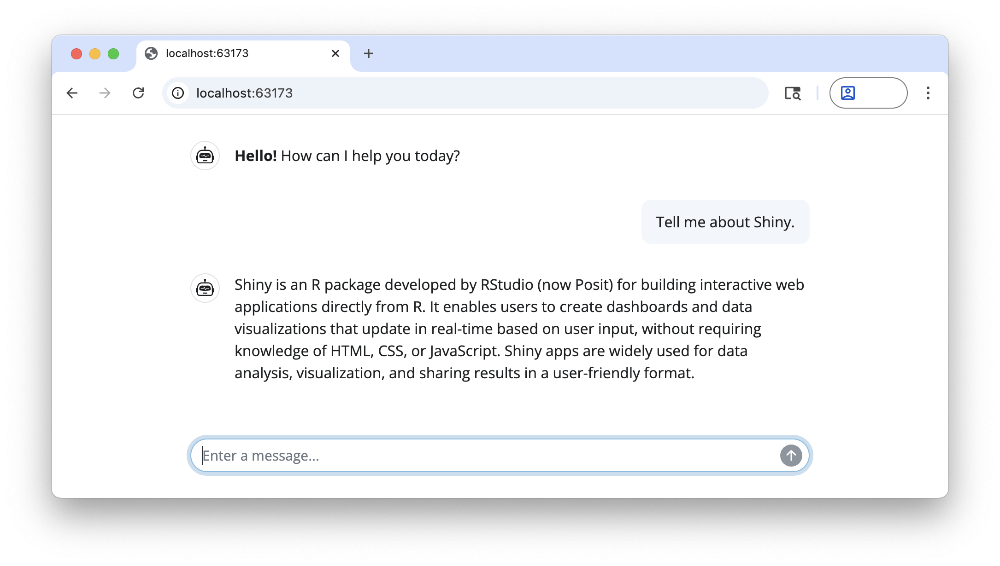

shinychat provides a Shiny toolkit for building generative AI applications like chatbots and streaming content. It’s designed to work alongside the ellmer package, which handles response generation.
Installation
You can install shinychat from CRAN with:
install.packages("shinychat")Or, install the development version of shinychat from GitHub with:
# install.packages("pak")
pak::pak("posit-dev/shinychat/pkg-r")Example
To run this example, you’ll first need to create an OpenAI API key, and set it in your environment as OPENAI_API_KEY.
You’ll also need to install the ellmer package (with install.packages("ellmer")).
library(shiny)
library(shinychat)
ui <- bslib::page_fillable(
chat_ui(
id = "chat",
messages = "**Hello!** How can I help you today?"
),
fillable_mobile = TRUE
)
server <- function(input, output, session) {
chat <-
ellmer::chat_openai(
system_prompt = "Respond to the user as succinctly as possible."
)
observeEvent(input$chat_user_input, {
stream <- chat$stream_async(input$chat_user_input)
chat_append("chat", stream)
})
}
shinyApp(ui, server)
Next steps
Ready to start building a chatbot with shinychat? See Get Started to learn more.